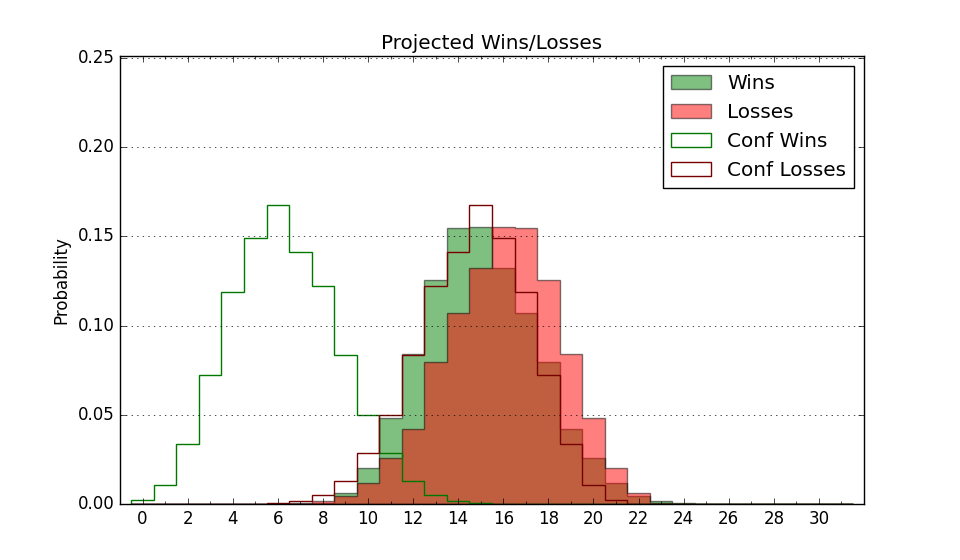

| Home | Game Probabilities | Conferences | Preseason Predictions | Odds Charts | NCAA Tournament |
| City: | Boulder, Colorado | |
| Conference: | Big 12 (3rd)
| |
| Record: | 0-1 (Conf) 7-2 (Overall) | |
| Ratings: | Comp.: 9.9 (83rd) Net: 11.6 (80th) Off: 108.1 (121st) Def: 96.4 (61st) SoR: 63.7 (39th) |
| Remaining | ||||||
|---|---|---|---|---|---|---|
| Date | Opponent | Win Prob | Pred. | |||
| 12/13 | South Dakota St. (115) | 75.4% | W 76-68 | |||
| 12/21 | Bellarmine (327) | 95.9% | W 85-63 | |||
| 12/30 | Iowa St. (7) | 17.9% | L 68-79 | |||
| 1/4 | @ Arizona St. (48) | 20.2% | L 66-76 | |||
| 1/8 | @ UCF (96) | 39.8% | L 69-72 | |||
| 1/12 | West Virginia (38) | 42.0% | L 69-72 | |||
| 1/15 | Cincinnati (19) | 31.0% | L 66-71 | |||
| 1/18 | @ Oklahoma St. (87) | 36.5% | L 73-77 | |||
| 1/21 | BYU (53) | 48.8% | L 75-76 | |||
| 1/25 | @ Arizona (22) | 12.1% | L 70-84 | |||
| 1/28 | Arizona St. (48) | 46.3% | L 71-72 | |||
| 2/2 | @ TCU (81) | 34.2% | L 68-72 | |||
| 2/5 | @ Utah (60) | 24.7% | L 71-80 | |||
| 2/8 | Houston (6) | 13.7% | L 58-70 | |||
| 2/11 | @ Kansas (14) | 10.1% | L 65-81 | |||
| 2/15 | UCF (96) | 69.3% | W 74-68 | |||
| 2/18 | @ Iowa St. (7) | 6.0% | L 64-83 | |||
| 2/22 | Baylor (10) | 23.6% | L 71-79 | |||
| 2/24 | Kansas (14) | 27.7% | L 70-77 | |||
| 3/2 | @ Kansas St. (89) | 37.1% | L 71-75 | |||
| 3/5 | @ Texas Tech (20) | 11.8% | L 67-80 | |||
| 3/8 | TCU (81) | 63.9% | W 72-68 | |||
| Previous | Game Score | |||||
| Date | Opponent | Win Prob | Result | Off | Def | Net |
| 11/4 | Eastern Washington (210) | 88.7% | W 76-56 | -11.2 | 21.1 | 10.0 |
| 11/8 | Northern Colorado (147) | 81.7% | W 90-88 | -9.9 | -3.7 | -13.5 |
| 11/13 | Cal St. Fullerton (279) | 93.3% | W 83-53 | 7.9 | 8.6 | 16.6 |
| 11/17 | Harvard (259) | 92.1% | W 88-66 | 12.0 | -3.9 | 8.1 |
| 11/25 | (N) Michigan St. (23) | 20.7% | L 56-72 | -15.9 | 5.0 | -10.9 |
| 11/26 | (N) Connecticut (11) | 14.7% | W 73-72 | 19.7 | 0.5 | 20.2 |
| 11/27 | (N) Iowa St. (7) | 10.6% | L 71-99 | 2.4 | -23.9 | -21.6 |
| 12/2 | Pacific (280) | 93.3% | W 75-66 | -4.8 | -1.7 | -6.5 |
| 12/7 | Colorado St. (116) | 76.1% | W 72-55 | -4.0 | 16.8 | 12.7 |
| Stats & Trends | |||||
|---|---|---|---|---|---|
| Current | Day | Week | Month | Season | |
| Composite | 9.9 | +0.1 | +1.9 | +2.7 | +3.9 |
| Comp Rank | 83 | +1 | +12 | +10 | +20 |
| Net Efficiency | 11.6 | +0.1 | +2.5 | -6.4 | -- |
| Net Rank | 80 | -- | +10 | -21 | -- |
| Off Efficiency | 108.1 | -0.1 | +0.5 | +7.4 | -- |
| Off Rank | 121 | -- | +6 | +104 | -- |
| Def Efficiency | 96.4 | +0.2 | +2.0 | -13.8 | -- |
| Def Rank | 61 | +3 | +30 | -45 | -- |
| SoS Rank | 172 | -1 | +6 | +110 | -- |
| Exp. Wins | 15.0 | +0.0 | +1.0 | +2.4 | +3.2 |
| Exp. Conf Wins | 6.3 | +0.0 | +0.7 | +0.9 | +1.2 |
| Conf Champ Prob | 0.0 | -- | -0.0 | -0.0 | -0.0 |

| Advanced Stats | ||
|---|---|---|
| Stat | Value | Rank |
| Off Eff FG % | 0.557 | 60 |
| Off Ast Ratio | 0.180 | 28 |
| Off ORB% | 0.320 | 92 |
| Off TO Rate | 0.182 | 337 |
| Off FT Ratio | 0.400 | 63 |
| Def Eff FG % | 0.461 | 56 |
| Def Ast Ratio | 0.120 | 51 |
| Def ORB% | 0.226 | 31 |
| Def TO Rate | 0.145 | 211 |
| Def FT Ratio | 0.252 | 32 |